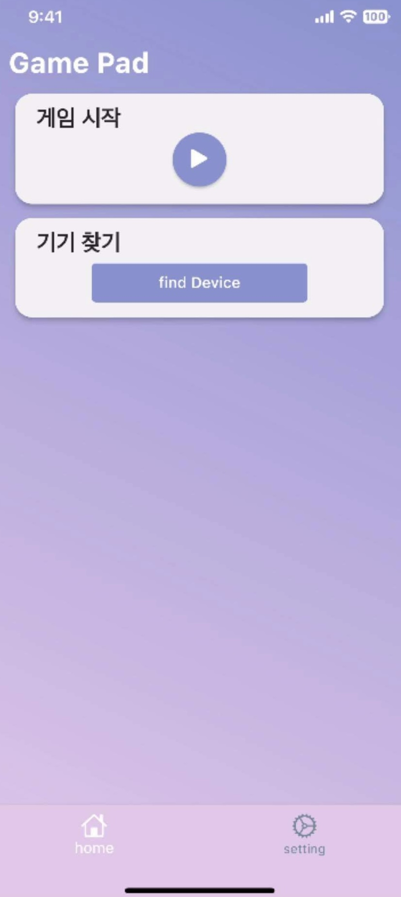
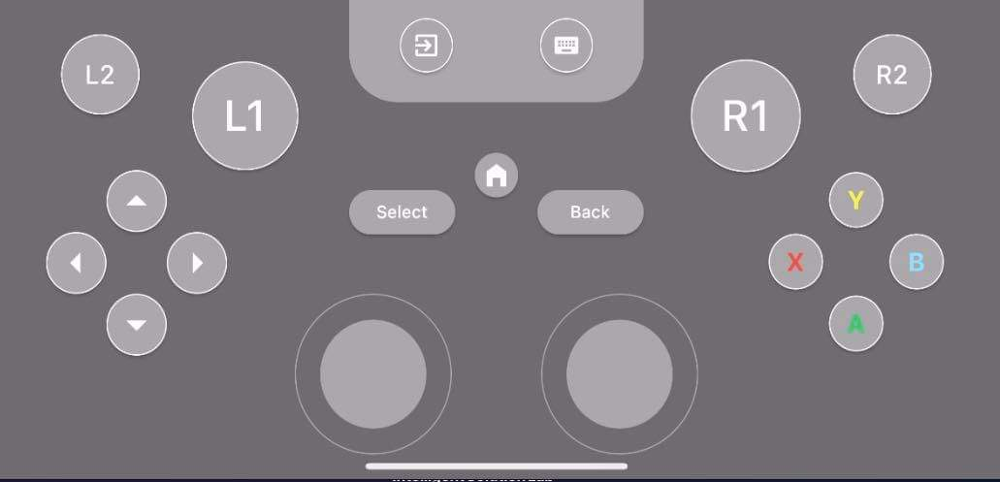
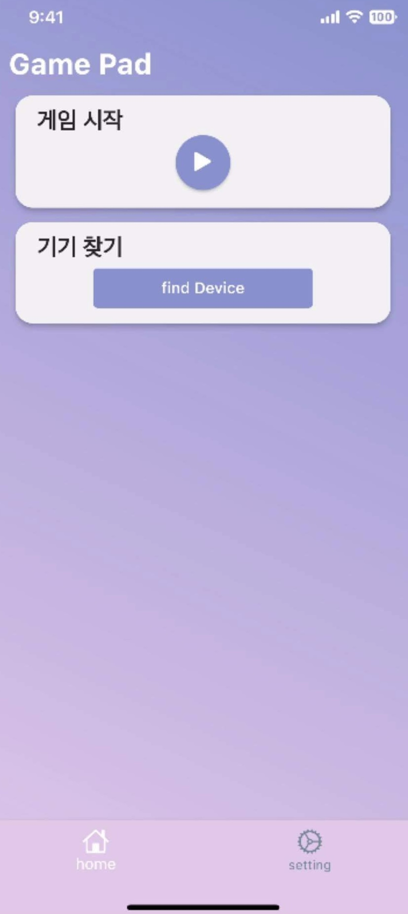
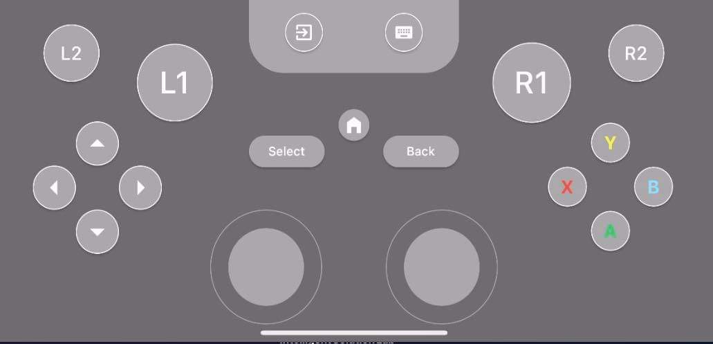
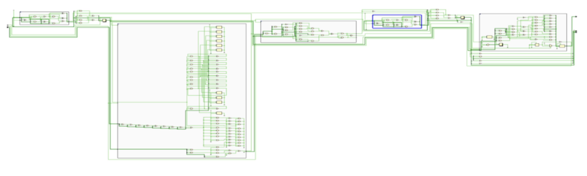
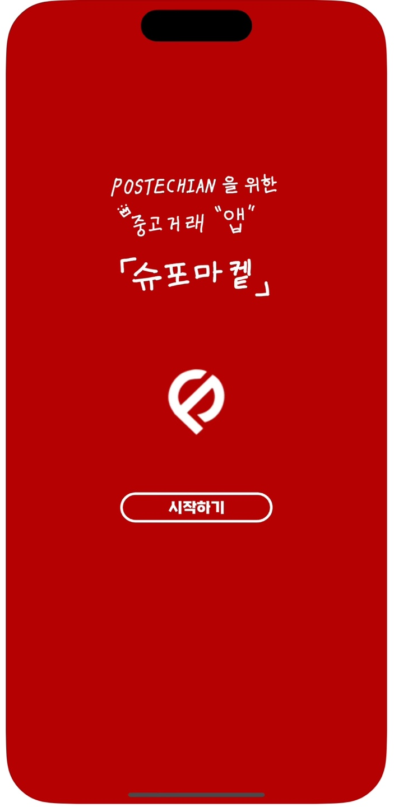
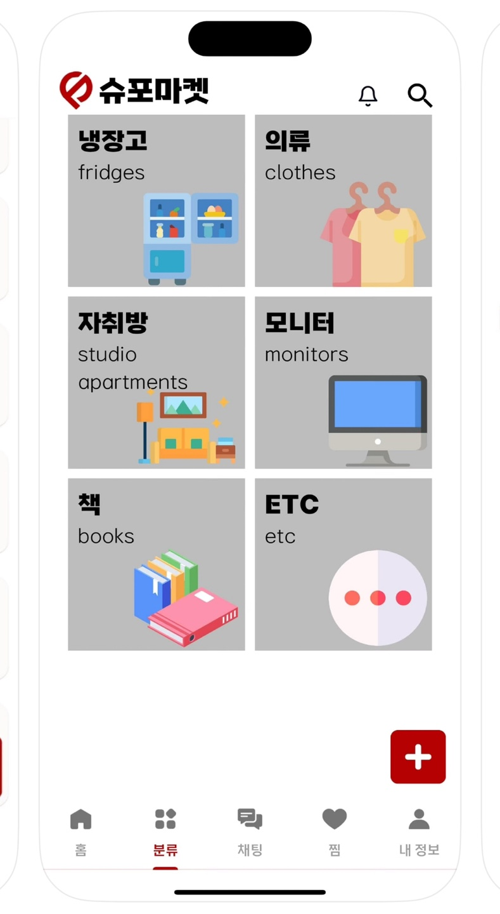
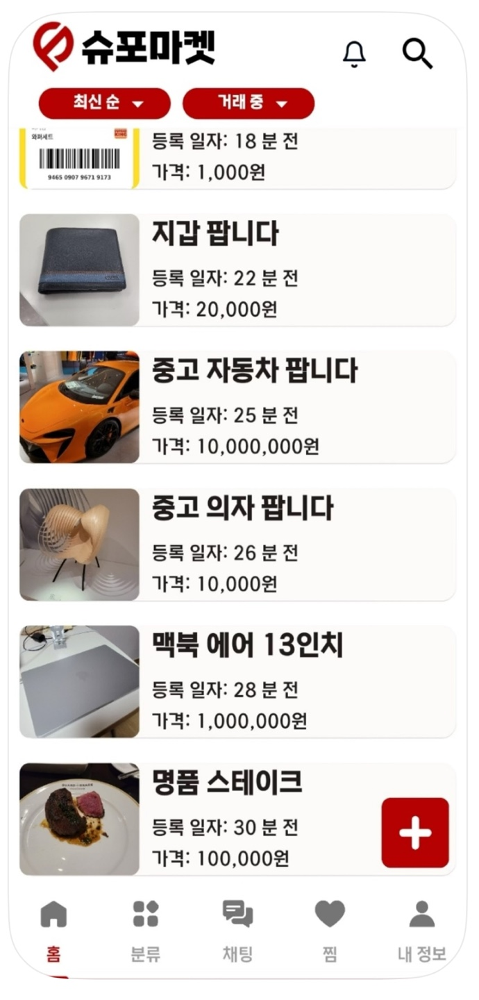

게임 패드 모바일 크로스플랫폼 Application
Samsung Electronics DX VD 사업부 IS랩에서 6주동안 인턴 근무를 진행하였습니다. Smart TV의 게임 패널의 활용성을 높이기 위해 Game Pad Application 프로토타입을 제작하였습니다
 소통하는 공학자, 이지현입니다
POSTECH에서 컴퓨터공학과 전자전기공학을 전공하고 있습니다
Samsung Electronics DX VD 사업부 IS랩에서 6주동안 인턴 근무를 진행하였습니다. Smart TV의 게임 패널의 활용성을 높이기 위해 Game Pad Application 프로토타입을 제작하였습니다
 게임 개발 동아리 GPOS에서 NDM 대회를 출전하며 제작한 게임으로, 논리 퍼즐 중 하나인 양팔 저울 문제를 모티브로 제작된 여럿이서 즐길 수 있는 추리 게임입니다. 자신이 시민인지 능력자인지 알 수 없다는 조건 속에서 자신만의 정보를 활용해 적극적인 토론으로 자신의 정보는 숨기고 다른 사람의 정보를 추리해야 하는 게임입니다.
GitHub URLLED의 On-Off 순서 및 개수를 기억하고 기억력을 테스트하는 게임이다.
 GitHub URLUGRP(학부생 연구 프로그램) 프로젝트를 통해서 중고 시장 앱 제작 및 출시를 진행하였습니다
   GitHub URLReconfigurable 로직 데모 kit를 제작하고 소모전력절감 효과를 검증하는 것을 목표로 합니다. 기존에 사용했던 Te-ZnO AAS 소자가 아닌, 새로운 구조의 Unit cell을 디자인하여 and, or의 reconfigurable 특성을 관찰하고 모델링을 진행합니다. 이후 해당 AAS 기반으로 logic gate 및 mux, adder 등 상위 회로를 이용해 demo kit를 설계하여 CMOS회로와 전력 소모 및 동작 주파수를 비교할 예정입니다. 해당 연구를 통해 기존의 회로의 소모 전력을 절감시키고 보다 적은 개수의 소자를 사용하여 구현할 수 있는 효과를 기대할 수 있습니다.
첫 번째 가설 ‘워터마킹은 한글 텍스트에 잘 적용되지 않을 것이다’의 검증을 진행합니다. 한글 전처리 패키지, 토크나이징 과정을 학습하며 한글 언어모델의 배경 학습과 활용 방법을 구상합니다. 이후 A Watermark for Large Language Models (Maryland, 2023) 알고리즘(Text Generation with Hard Red List, Soft Red List, Private watermarking)을 이용해 특정 한글 언어모델에 적용시켜 성능 지표를 확인합니다. 기본적으로 논문에서 사용한 유형 I 오류(인간의 텍스트가 워터마킹된 경우)와 유형 II 오류(기계 텍스트가 감지되지 않는 경우) 비율을 사용하여 워터마크 강도를 측정할 수 있습니다.
1. 심전도 보드 제작 및 측정
2. Quadcopter의 위치 및 자세 제어 실습 및 자율 비행 실습
3. 딥러닝을 이용한 영상 인식 실습
4. 마이크로 컨트롤러 응용시스템
5. MATLAB을 이용한 통신 실험
6. 초음파 센서의 원리와 응용
7. FPGA를 이용한 디지털 시스템 설계
전자전기공학 실험2
GitHub URL